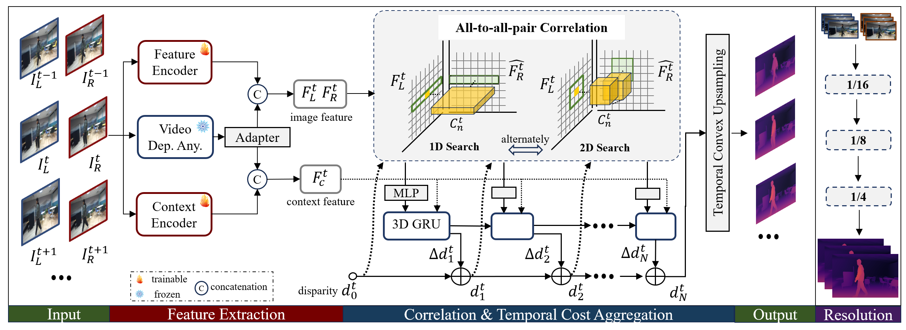

Overview of the proposed Stereo Any Video.
Given a stereo video sequence as input,
the model first extracts features and context information
using trainable convolutional encoders and a frozen monocular video depth encoder
(Video Depth Anything). At each iteration,
an all-to-all-pair correlation computes feature correlations,
followed by an MLP encoder for compact representation.
Disparities are iteratively refined using a 3D Gated Recurrent Unit (GRU),
integrated with cost volume features, and upsampled via a temporal convex upsampling layer.
This process is repeated within a cascaded pipeline to progressively recover full-resolution disparities.